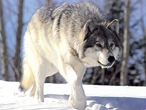

Animales
Vertebrados
Lobo
El lobo (Canis lupus) es una especie de mamífero placentario del orden de los carnívoros. El naturalista Carlos Linneo, en la décima edición de su obra Systema naturæ, publicada en 1758, clasificó al perro doméstico como especie distinta (Canis familiaris).
Oveja
Ea oveja (Ovis orientalis aries)1 es un mamífero cuadrúpedo ungulado doméstico, utilizado como ganado. Como todos los rumiantes, las ovejas son artiodáctilos, o animales con pezuñas. A pesar de que el término oveja se aplica a muchas especies del género Ovis, por lo general hace referencia a la subespecie doméstica de Ovis orientalis.

Invertebrados
Gusano
La palabra gusano se utiliza coloquialmente para designar los más diversos animales que coinciden en ser pequeños, blandos, de forma alargada y con apéndices locomotores poco destacados o ausentes.